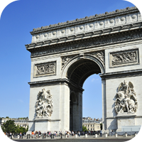
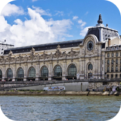
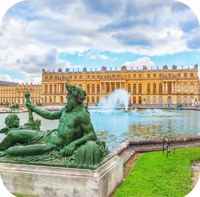
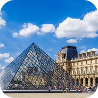
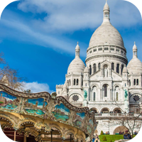
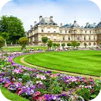
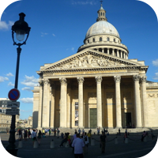
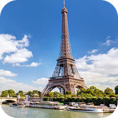

Cultuur
Arc de Triomphe
Bezoek dit nationale symbool op Place de l'Étoile op de top van de Champs-Élysées.

Museum d'Orsay
Elke Parijsbezoekende kunstliefhebber moet dit museum bezocht hebben!

Kasteel van Versaille
Stap in de schoenen van de Zonnekoning door zijn prachtige paleis te bewandelen.

Louvre
Bekijk hier de wereldberoemde kunstwerken van o.a. Da Vinci, Rembrandt, etc.

Sacré-
coeur
Bezoek het "heilige hart" van Parijs, deze prachtige basiliek is adembenemend.

Jardin de Luxembourg
Een heerlijke plek om lekker naar toe te gaan om te relaxen. Zonnen, lunchen, alles kan!

Panthéon
Dit gebouw uit de Grieks-Romeinse tijd is een must-see voor elke cultuurliefhebber!

Eiffeltoren
Dit beroemde monument staat bekend als het hart van Parijs en is een echte toeristentrekker!
